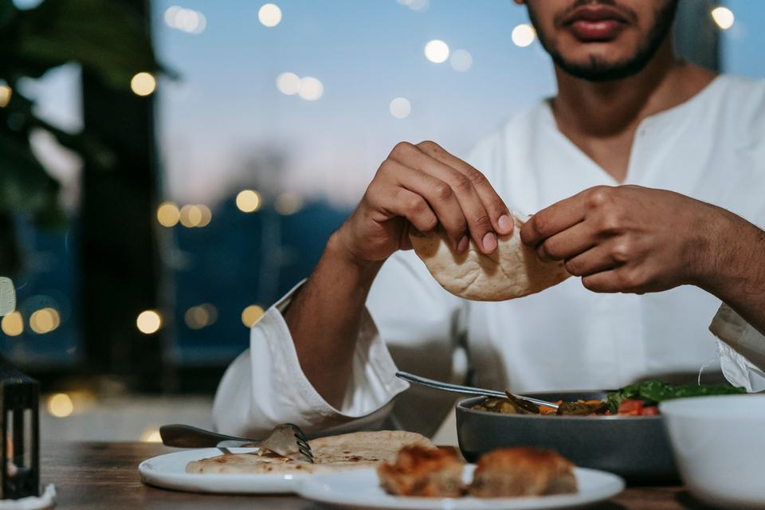
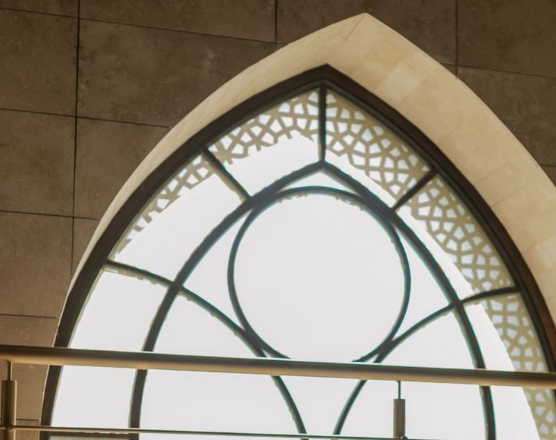
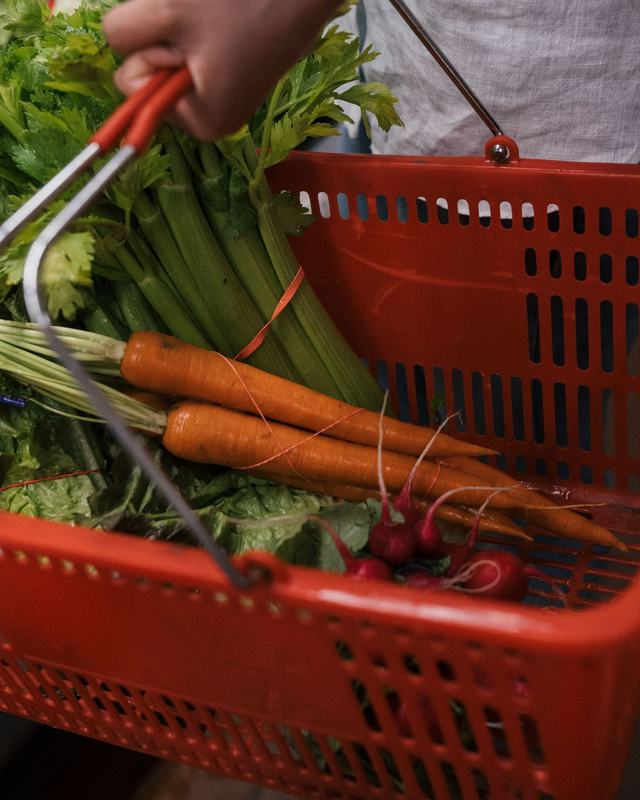
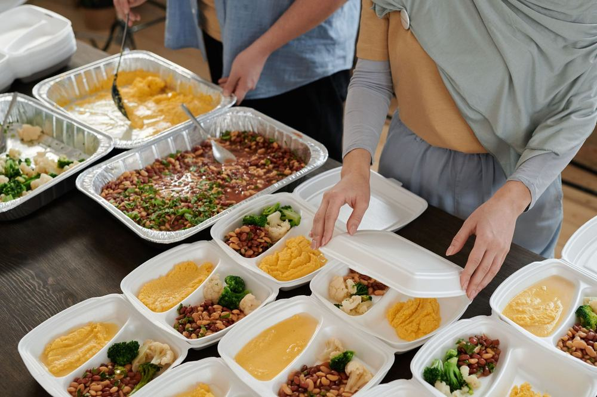
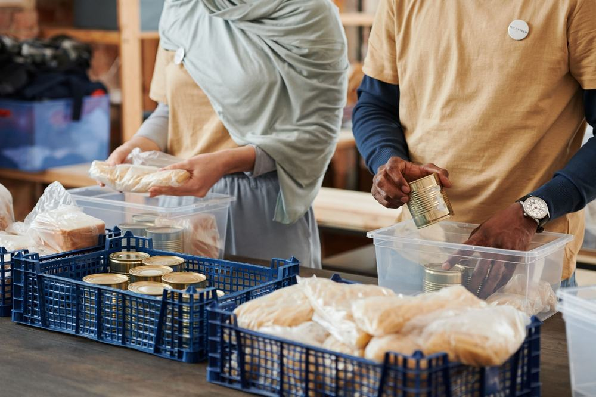
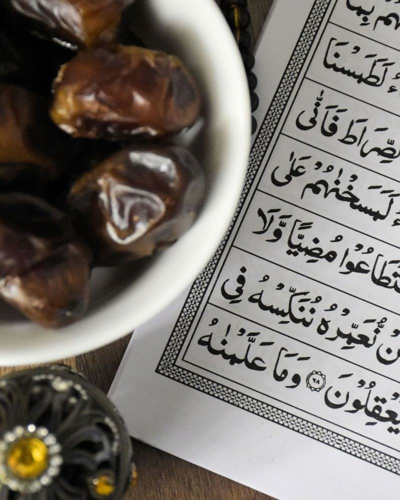
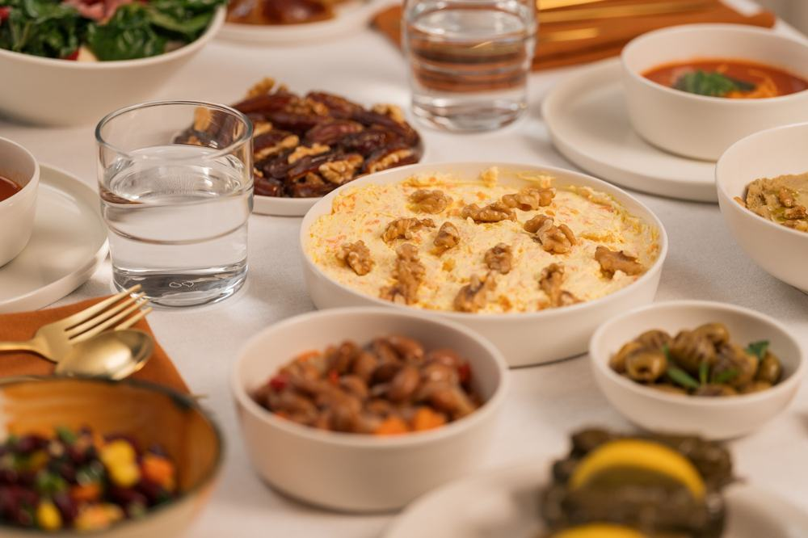
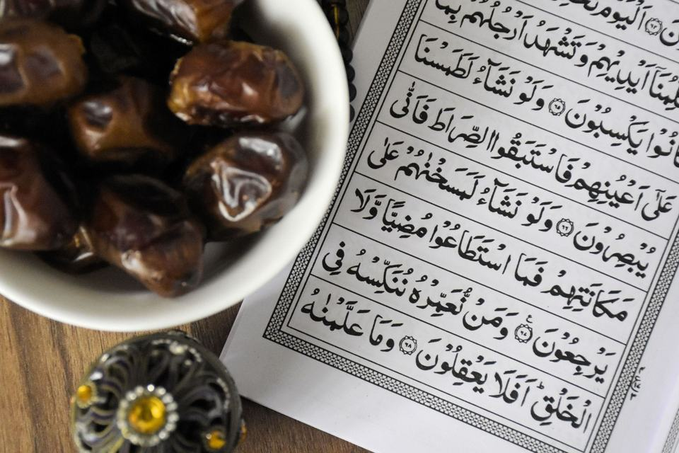
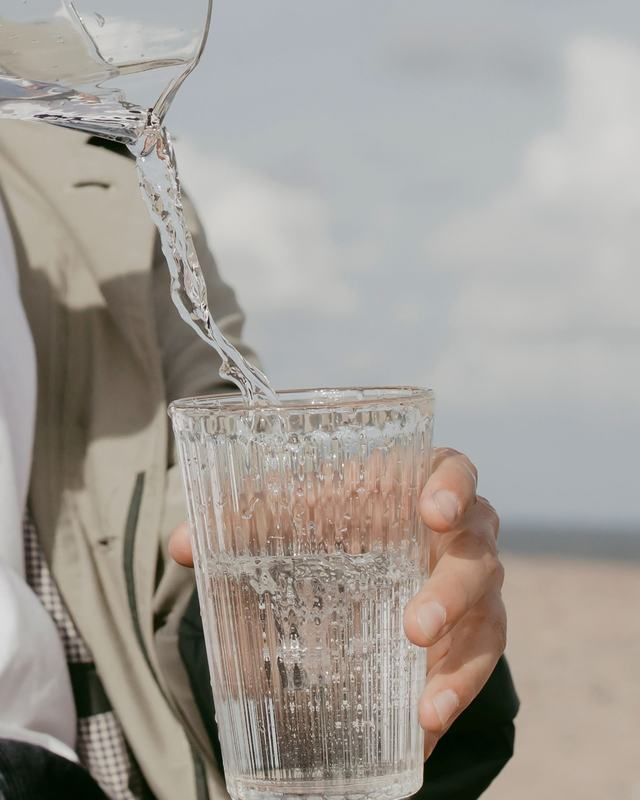
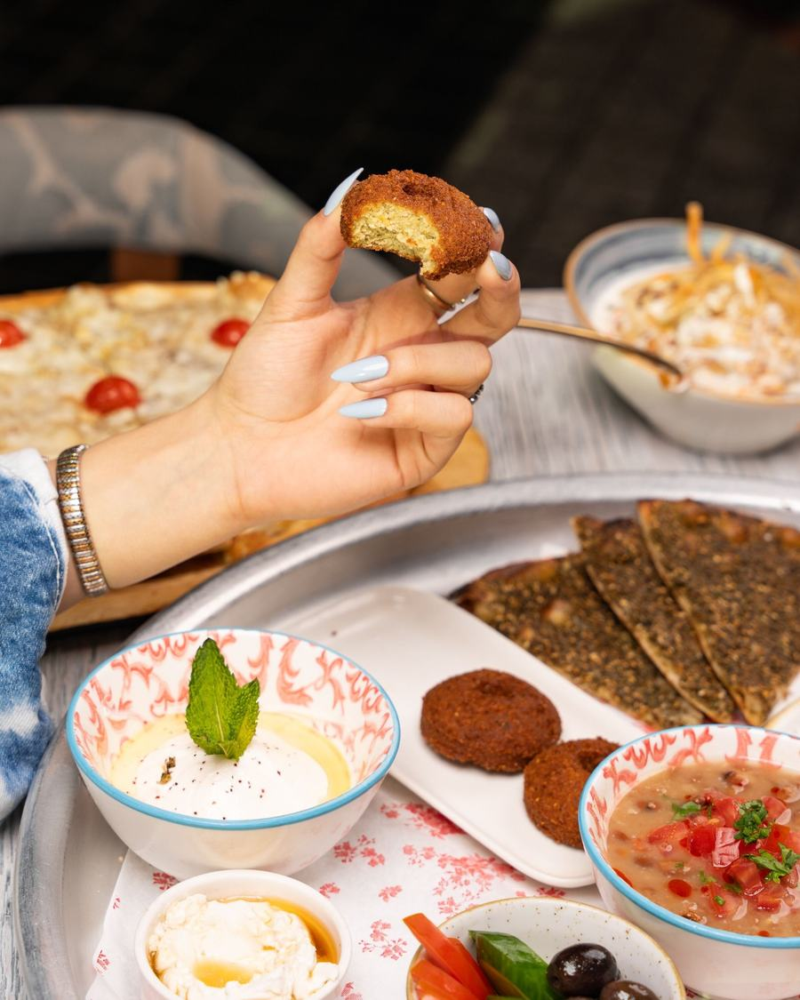

جمعية بهجة العمانية للأيتام
اجعل لعطائك أثراً يدوم
زكاة، صدقة، كفارة أو مشروع موسمي — اختر باب عطائك، وأكمل تبرعك عبر الصفحات الرسمية لجمعية بهجة.
- جمعية رسمية منذ 2014
- دفع آمن عبر SmartPay من بنك مسقط


أبواب العطاء
كيف تحب أن تعطي؟
اختر نوع العطاء، وننقلك مباشرةً إلى صفحة الدفع الرسمية المخصّصة له.
-

-

-

-

-


يمكن أن تصبح سنداً.
الزكاة
أخرج زكاتك للأيتام المسجلين لدى بهجة
تتيح جمعية بهجة العمانية للأيتام إخراج زكاة المال لصالح الأيتام المسجلين لديها من خلال صفحة الزكاة الرسمية.
للاستفسارات الشرعية التفصيلية، يرجى الرجوع إلى جهات الإفتاء المختصة.
احسب زكاتك
استخدم أدوات جمعية بهجة الرسمية لحساب الزكاة قبل إتمام التبرع.
احسب زكاتك يدعم تطبيق بهجة الرسمي حساب الزكاة.
مشروع موسمي
السلة الرمضانية
مشروع سنوي تقدّم فيه الجمعية سلة غذائية لأسر الأيتام المسجلة لديها، توزّع مرة واحدة في شهر رمضان المبارك على أسر الأيتام في مختلف ولايات المحافظة، وتكفي معظم أيام الشهر.
بحسب الملف التعريفي الرسمي للجمعية.
ساهم في السلة الرمضانيةالكفارات
أدِّ كفارتك عبر بهجة
المبالغ المعتمدة من الجمعية لكل نوع كفارة.
- 15ر.ع كفارة يمين إطعام عشرة مساكين
- 1.5ر.ع عن يوم صيام واحد
- 45ر.ع عن شهر رمضان كاملاً
الصدقة
صدقتك حيث الحاجة
يمكنك التبرع صدقةً عامة بالمبلغ الذي تختاره، أو اختيار أحد مشاريع الجمعية القائمة.
إلى أين يذهب عطاؤك
أبواب من عطائك
-

-
-
-

-

-

الصور المعلَّمة «من بهجة» من مواد الجمعية المنشورة؛ بقية الصور تعبيرية من Pexels ولا تمثّل مستفيدين من الجمعية.
عن الجمعية
عطاءٌ موثوق
- التأسيس10 فبراير 2014
- السند النظاميالمرسوم السلطاني رقم 14/2000
- الإشرافتعمل تحت مظلة وزارة التنمية الاجتماعية
- نطاق الخدمةالأيتام والأرامل في ولايات محافظة ظفار
- منصة جودمبادرات الجمعية مدرجة أيضاً على منصة جود التابعة لوزارة التنمية الاجتماعية.
تبرعك يتم عبر القنوات الرسمية
لا تُدخل بيانات بطاقتك في هذه الصفحة؛ يتم الدفع في صفحات الجمعية الرسمية.
- الموقع الرسمي لجمعية بهجة
- SmartPay من بنك مسقط
- تطبيق بهجة الرسمي
- التحويل البنكي
طرق التبرع
ثلاث طرق للتبرع
-
عبر الموقع الرسمي
اختر المشروع وادفع بالبطاقة عبر SmartPay من بنك مسقط.
صفحة التبرعات -
عبر تطبيق بهجة
تبرّع، واطّلع على مشاريع الجمعية، واحسب زكاتك.
-
تحويل بنكي
بعد الإيداع، يُرجى إشعار الجمعية. تم التحقق بتاريخ .
تحقّق من الحسابات البنكية الحالية عبر صفحة التواصل الرسمية قبل التحويل، ثم أشعر الجمعية بعد الإيداع.
تحقّق من الحسابات
مساعدة
أسئلة شائعة
كيف أخرج زكاتي عبر بهجة؟
من خلال صفحة الزكاة الرسمية، حيث تُخرج زكاة مالك لصالح الأيتام المسجلين لدى الجمعية. ويمكنك حساب زكاتك عبر أدوات الجمعية الرسمية وتطبيق بهجة.
كم تبلغ السلة الرمضانية؟
35 ر.ع للأسرة المسجلة الواحدة، بحسب الملف التعريفي الرسمي للجمعية. وهي مشروع سنوي يكفي معظم أيام شهر رمضان.
ما مبالغ الكفارات؟
كفارة اليمين 15 ر.ع (إطعام عشرة مساكين)، وعن يوم صيام واحد 1.5 ر.ع، وعن شهر رمضان كاملاً 45 ر.ع — عبر صفحة الكفارات.
ما طرق الدفع المتاحة؟
تقبل الجمعية البطاقات الائتمانية وبطاقات الخصم عبر SmartPay من بنك مسقط على موقعها الرسمي، إضافةً إلى التبرع عبر التطبيق والتحويل البنكي.
هل يمكنني التبرع عبر تطبيق بهجة؟
نعم. يتيح تطبيق بهجة الرسمي التبرع والاطلاع على مشاريع الجمعية، كما يدعم حساب الزكاة وخدمات أخرى.
هل يمكنني التبرع بالتحويل البنكي؟
نعم. تحقّق من أرقام الحسابات الحالية عبر صفحة التواصل الرسمية، ثم أشعر الجمعية بعد الإيداع.
كيف أتواصل مع جمعية بهجة؟
عبر الهاتف: 23289966 · 91403312 · 91403373، أو البريد الإلكتروني bahjah1.omani@gmail.com، أو صفحة التواصل الرسمية.

عطاءٌ قليل، وبهجةٌ كبيرة
اختر باب عطائك وأكمل تبرعك بأمان عبر الصفحة الرسمية لجمعية بهجة.